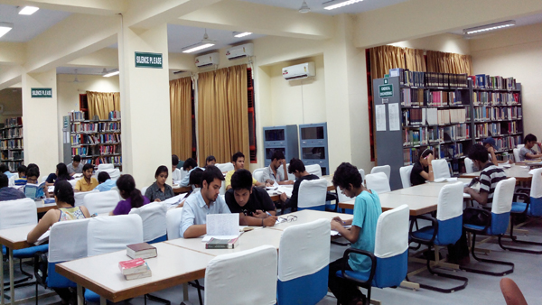
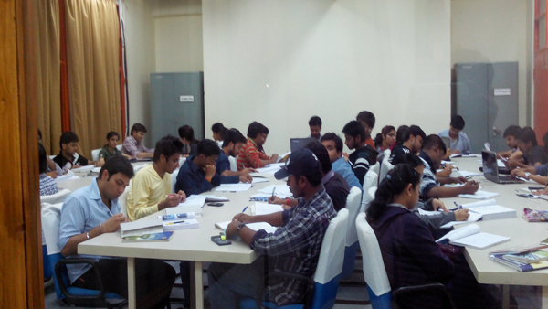

.JPG)


Learning Resource Center
The Learning Resource Center of JUET plays very important & vital role in all academic & research activities.It is fully computerized by a web based Library management software "Liberty". Users can search their desired information at their own desktop such as availability of books, current status of their account, new arrivals.. .etc through web OPAC ( Online Public Access Catalogue). At present LRC is having good collection of reference sources like hand book, standard, manuals, encyclopedia, technical reports, project reports along with the prescribed text and reference books, and national & International printed journals. Apart from printed resources LRC is also having non printed materials, CD ROMs, full text e-journals and e-books and the subscribing to 6 e-resources namely IEL, ACM, ASCE,ASME, Springer, ProQuest. L.R.C is also the member of DELNET (Developing Library Network) to avails inter library loan facilities among DELNET members through this network. http://delnet.nic.in. DELNET Inter Library Loan Request Form.
LRC provides various services to its users like book Lending Service, Reference Service SDI, Current Awareness Services, SMS Alert Service, RSS Reprographic (photocopy)and Interlibrary Loan facilities to the students and faculty for almost 14 hours a day from 8.30 A.M to 11.00 P. M. LRC is enabled with EM based security system for the controlling of pilferages.
For any L.R.C related enquiries, please contact Dr. Sudeep Sharma on the email idsudeep.sharma@juet.ac.in & sudeepsharma76@gmail.com or EPBAX Ext. 130. For more LRC details of LRC please visit : http: 192.168.4.20
LRC provides various services to its users like book Lending Service, Reference Service SDI, Current Awareness Services, SMS Alert Service, RSS Reprographic (photocopy)and Interlibrary Loan facilities to the students and faculty for almost 14 hours a day from 8.30 A.M to 11.00 P. M. LRC is enabled with EM based security system for the controlling of pilferages.
For any L.R.C related enquiries, please contact Dr. Sudeep Sharma on the email idsudeep.sharma@juet.ac.in & sudeepsharma76@gmail.com or EPBAX Ext. 130. For more LRC details of LRC please visit : http: 192.168.4.20